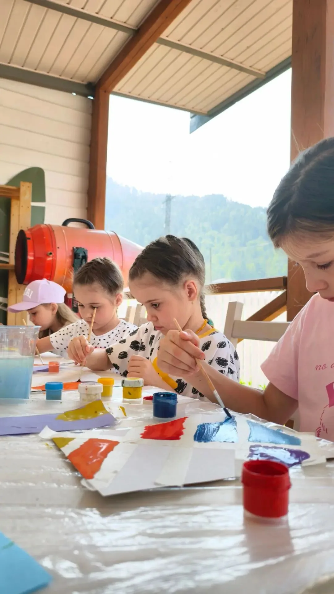

Маленькие открытия каждый деньДетям — приключения
Новые друзья, внимательные педагоги и возможность попробовать то, чего ещё никогда не делал.
- Хореография
- Творческие мастерские
- Игры и командные активности
- Образовательные занятия
- Выступления и творческие проекты